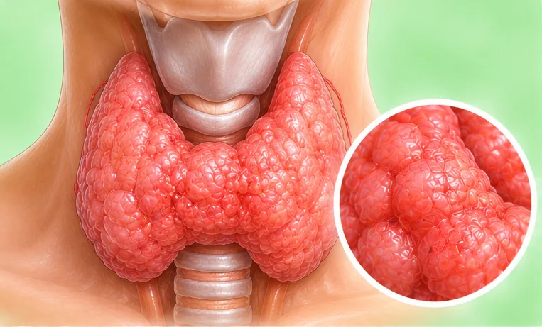

Gondok (pembesaran tiroid)
Bengkak di depan leher kerana kelenjar tiroid membesar
Apa itu
Tiroid ialah kelenjar kecil di depan leher. Apabila ia lebih besar daripada biasa, ia dipanggil gondok. Ia mungkin tidak sakit, dan kelenjar mungkin berfungsi seperti biasa atau tidak.
- Depan leher
- Lebih kerap pada wanita
- Bengkak yang kelihatan
- Jumpa doktor
- Doktor keluarga, pakar endokrinologi
- Biasa pada
- Wanita, warga emas, dan orang yang ada ahli keluarga dengan masalah tiroid
- Berjangkit
- Tidak
- Perjalanan
- Sering membesar perlahan selama bertahun-tahun; doktor boleh memeriksa puncanya
Tanda biasa

Suara serakSuara serak (disfonia) 
Sukar atau sakit menelanDisfagia
Tanda-tanda lain
- Bengkak atau ketulan di depan leher
- Rasa ketat di tekak atau leher, atau kolar terasa sempit
Mengapa ia berlaku

Diwarisi dalam keluargaKecenderungan genetik
Punca lain
- Kekurangan iodin dalam makanan, yang kurang biasa di Malaysia
- Penyakit tiroid seperti tiroid terlalu aktif atau kurang aktif
- Ketulan (nodul) yang tumbuh dalam tiroid
Jumpa doktor dahulu jika
- Sukar bernafas atau menelan: ke hospital segera
- Ketulan keras yang membesar dengan cepat, atau ketulan baru dengan suara serak
- Degupan jantung laju, menggeletar, berat badan turun atau berpeluh banyak
- Rasa sangat letih, sejuk, atau berat badan naik tanpa sebab
- Bengkak leher yang sakit dengan demam
Jika mana-mana berkenaan, sila jumpa doktor sebelum sesi.
Halaman ini ialah maklumat am. Sila terus mengambil ubat biasa anda dan terus berjumpa doktor.
Teruskan mengambil ubat biasa anda dan terus berjumpa doktor. Sesi kami ialah sokongan lembut dan tidak menggantikan rawatan perubatan.
Menjaga diri

Makan makanan seimbangDiet seimbang 
Ambil ubat seperti disuruh doktorPematuhan ubat
Lebih banyak cara menjaga diri
- Jumpa doktor untuk pemeriksaan dan ujian darah
- Jangan tekan atau gosok bengkak itu
- Perhatikan sebarang perubahan saiz dan beritahu doktor
Beritahu ahli terapi anda
- Kehamilan
- Penyakit jantung
- Perentak jantung atau implan logam
- Kecederaan atau pembedahan leher baru-baru ini
Ahli terapi anda akan menyemaknya bersama anda sebelum bermula.
Soalan dan jawapan
Apakah Gondok (pembesaran tiroid)?
Bengkak di depan leher kerana kelenjar tiroid membesar. Tiroid ialah kelenjar kecil di depan leher. Apabila ia lebih besar daripada biasa, ia dipanggil gondok. Ia mungkin tidak sakit, dan kelenjar mungkin berfungsi seperti biasa atau tidak.
Apakah tanda biasa Gondok (pembesaran tiroid)?
Suara serak · Sukar atau sakit menelan
Mengapa Gondok (pembesaran tiroid) berlaku?
Diwarisi dalam keluarga
Bagaimana menjaga diri dengan Gondok (pembesaran tiroid)?
Makan makanan seimbang · Ambil ubat seperti disuruh doktor
Bolehkah sesi AI Body Master membantu Gondok (pembesaran tiroid)?
Sesi ialah sokongan meridian tanpa jarum yang lembut untuk kesejahteraan anda. Ia tidak merawat atau menyembuhkan Gondok (pembesaran tiroid) dan tidak menggantikan ubat atau doktor anda. Beritahu ahli terapi anda sebelum sesi bermula.
Keadaan berkaitan
Rujukan: General information based on public health sources such as Mayo Clinic, NHS, Cleveland Clinic and NCBI StatPearls.
Halaman dikemas kini: 2026-11-01